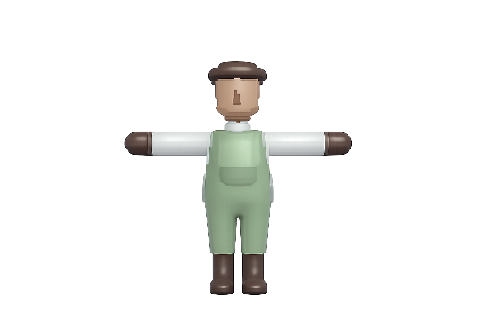

Een overzicht van de mechanic die ik heb ontwikkeld voor Untitled Goose

Ik heb de Farmer Walk gemaakt met waypoints in de scene. De farmer beweegt automatisch tussen verschillende punten in het level. Hierdoor kan ik makkelijk bepalen welke route hij volgt en hoe snel hij beweegt. Tijdens het lopen wordt de walk-animatie afgespeeld. Bij bepaalde waypoints voert de farmer ook acties uit, zoals graven of harken. Deze acties worden geactiveerd op basis van zijn locatie, waardoor de farmer automatisch de juiste taak uitvoert.
private void Update()
{
if (isWorking)
{
farmerAnimation.SetMoving(false);
return;
}
Vector3 direction = target.position - transform.position;
if (direction.magnitude > 0.4f)
{
farmerAnimation.SetMoving(true);
transform.Translate(
direction.normalized * _speed * Time.deltaTime,
Space.World
);
direction.y = 0;
if (direction.sqrMagnitude > 0.001f)
{
Quaternion targetRotation =
Quaternion.LookRotation(direction);
transform.rotation = Quaternion.Slerp(
transform.rotation,
targetRotation,
5f * Time.deltaTime
);
}
}
else
{
farmerAnimation.SetMoving(false);
StartTaskWayPoint();
}
}void StartTaskWayPoint()
{
WaypointTask waypointTask =
target.GetComponent<WaypointTask>();
if (waypointTask == null ||
waypointTask.taskType == FarmerTask.None)
{
GetNextWayPoint();
return;
}
if (waypointTask.taskType == FarmerTask.Digging)
{
currentTask = new DiggingTask();
}
else if (waypointTask.taskType == FarmerTask.Rake)
{
currentTask = new RakeTask();
}
farmerAnimation.PlayTaskAnimation(currentTask.TaskType);
isWorking = true;
Invoke(nameof(FinishTask), 5f);
}
void FinishTask()
{
farmerAnimation.StopTaskAnimation();
isWorking = false;
currentTask = null;
GetNextWayPoint();
}
void GetNextWayPoint()
{
wavePointIndex++;
if (wavePointIndex >= wayPoints.Points.Count)
{
wavePointIndex = 0;
}
target = wayPoints.Points[wavePointIndex];
}public void SetMoving(bool moving)
{
animator.SetBool("IsMoving", moving);
}
public void PlayTaskAnimation(FarmerTask task)
{
animator.SetBool("IsMoving", false);
animator.SetBool("IsWorking", true);
animator.SetBool(
"IsRaking",
task == FarmerTask.Rake
);
animator.SetBool(
"IsDigging",
task == FarmerTask.Digging
);
}
public void StopTaskAnimation()
{
animator.SetBool("IsWorking", false);
animator.SetBool("IsRaking", false);
animator.SetBool("IsDigging", false);
}